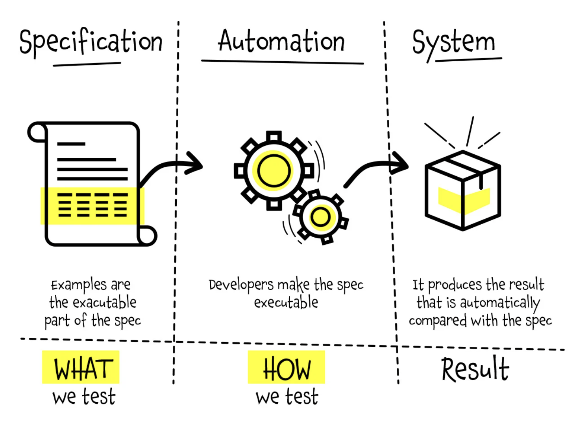

Specification by Example (SBE) on tarkvaraarenduse meetod, mis keskendub selgete ja konkreetsete näidete kasutamisele süsteemi käitumise määratlemiseks ja valideerimiseks.
Reaalsed näited, välditakse raske keelt, tänu millele on lihtsam aru saada. Parem koostöö, kus vigu tuvastatakse varem.
Palju aega vajav, kuna esialgne näidete loomine, analüüsimine ja planeerimine on ajamahukas. Samas võib olla ka liiga detailne, mis omakorda teeb asja keerulisemaks ja aeganõudvaks. Erinevad tööriistad, mida antud arendusmeetodikas kasutatakse võivad osutada raskeks uutele kasutajatele.
Cucumber:on avatud lähtekoodiga tööriist, mis toetab Behavior-Driven Development (BDD) ja Specification by Example metoodikaid. Selle abil saab kirjutada ja automatiseerida spetsifikatsioone, mis on esitatud loetavas formaadis (nt Gherkin keeles).
